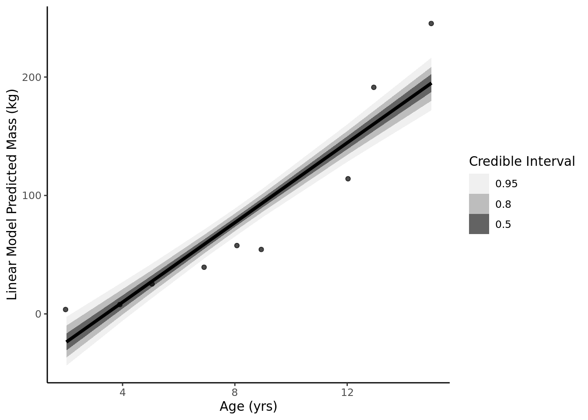
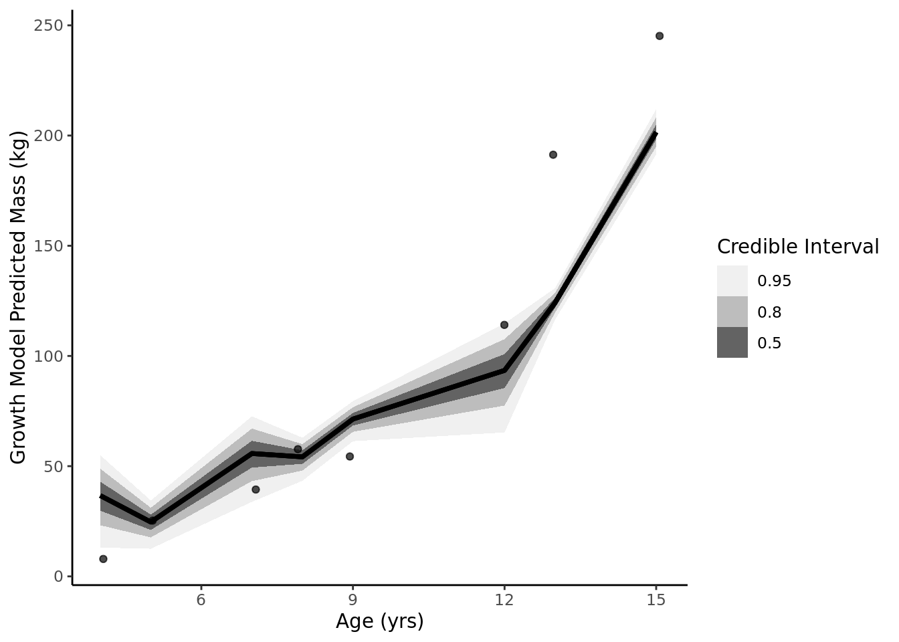

Revisit the marriage, age, and happiness collider bias example from Chapter 6. Run models m6.9 and m6.10 again (pages 178–179). Compare these two models using both PSIS and WAIC. Which model is expected to make better predictions, according to these criteria, and which model yields the correct causal inference?
We see that the model with both age and marriage is the best predictor using both metrics. Causally, marriage status in this problem is a collider because it is a common consquence of age and happiness. Therefore, the model with just age is the causally correct model.
Q2
Reconsider the urban fox analysis from last week’s homework. On the basis of PSIS and WAIC scores, which combination of variables best predicts body weight (W, weight)? What causal interpretation can you assign each coefficient (parameter) from the best scoring model??
For prediction, the best model is the model with food, group size, and area included (though it is very similar to the food + group size model). Food is a descendent of area, which means that conditioning on both means we are estimating the effect of area independent of food availability. In this model, we are only causally assessing the effect of food on weight, independent of area.
Q3 (optional)
The data in data(Dinosaurs) are body mass estimates at different estimated ages for six different dinosaur species. See ?Dinosaurs for more details. Choose one or more of these species (at least one, but as many as you like) and model its growth. To be precise: Make a predictive model of body mass using age as a predictor. Consider two or more model types for the function relating age to body mass and score each using PSIS and WAIC. Which model do you think is best, on predictive grounds? On scientific grounds? If your answers to these questions differ, why? This is a challenging exercise, because the data are so scarce. But it is also a realistic example, because people publish Nature papers with even less data. So do your best, and I look forward to seeing your growth curves.
Going to attempt to use the Von Bertanaffy growth equation in brms (source):
\[
L_T = L_0e^{-rt} + L_{max}(1 - e^{-rt})
\]
soi <- Dinosaurs %>%filter(species =="Massospondylus carinatus")## Model 1: Linear Model linear <-tar_read(h04_q3a)epred <- linear %>%epred_draws(soi)ggplot(data = soi, aes(x = age)) +stat_lineribbon(aes(x = age, y = .epred), data = epred) +geom_jitter(aes(y = mass), width = .1, height =0, alpha =0.7) +scale_fill_brewer(palette ="Greys") +labs(y ='Linear Model Predicted Mass (kg)', x ="Age (yrs)", fill ="Credible Interval") +theme_classic()

## Model 2: Growth Curvelagged_obs <- Dinosaurs %>%filter(species =="Massospondylus carinatus") %>%mutate(time_diff = age -lag(age),sizelast =lag(mass)) %>%slice(-1)# Von Bertanaffy growth equationvb_formula <-bf(mass ~ sizelast *exp(-exp(logR) * time_diff) + sizeMax * (1-exp(-exp(logR) * time_diff)), logR ~1, sizeMax ~1, nl =TRUE)growth <-tar_read(h04_q3b)epredg <- growth %>%epred_draws(lagged_obs)ggplot(data = lagged_obs, aes(x = age)) +stat_lineribbon(aes(x = age, y = .epred), data = epredg) +geom_jitter(aes(y = mass), width = .1, height =0, alpha =0.7) +scale_fill_brewer(palette ="Greys") +labs(y ='Growth Model Predicted Mass (kg)', x ="Age (yrs)", fill ="Credible Interval") +theme_classic()

## Model 3: Exponentialexponential <-tar_read(h04_q3c)eprede <- exponential %>%epred_draws(soi)ggplot(data = soi, aes(x = age)) +stat_lineribbon(aes(x = age, y = .epred), data = eprede) +geom_jitter(aes(y = mass), width = .1, height =0, alpha =0.7) +scale_fill_brewer(palette ="Greys") +labs(y ='Exponential Model Predicted Mass (kg)', x ="Age (yrs)", fill ="Credible Interval") +theme_classic()
model waic psis
1 linear -5.189971e+01 1.048258e+02
2 growth -4.633230e+01 9.353124e+01
3 exponential -7.345938e+10 1.862058e+06
Growth model performs best predictively. On scientific grounds, maybe the growth model as well since it is rooted in literature and an established equation?